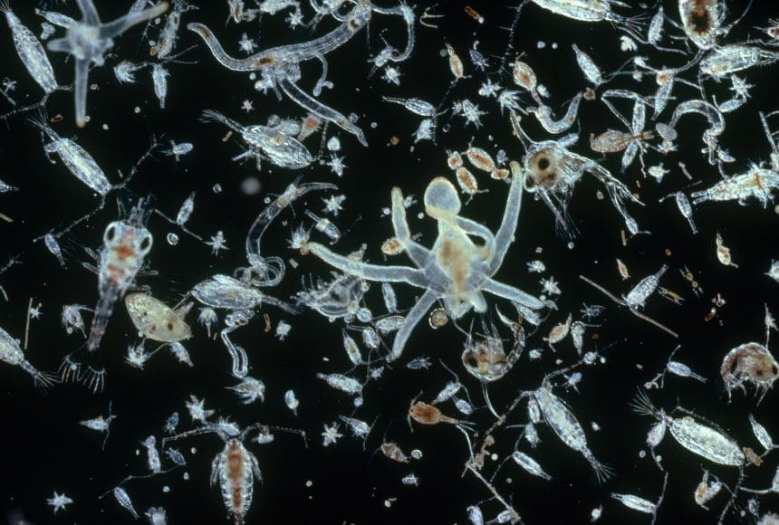
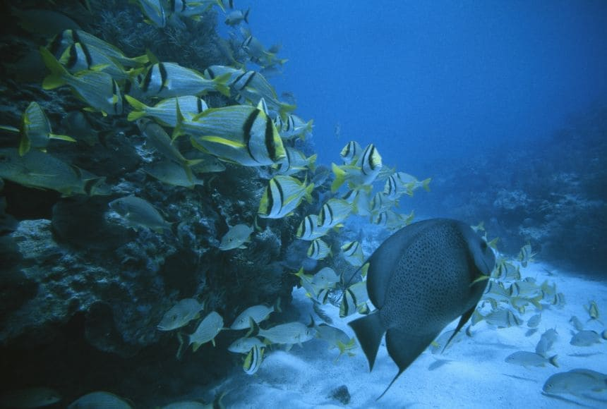

Plankton
Las plantas y animales microscópicos de la familia del plancton son la base de las pirámides alimenticias de agua dulce y de mar.

Cadena Alimenticia
El ecosistema marino está formado por una complicada serie de productores de energía interconectados, como las plantas y el fotoplancton, y consumidores, desde herbívoros hasta carnívoros, tanto grandes como pequeños.

Ecosistemas marinos
Los ecosistemas marinos son ambientes acuáticos con altos niveles de sal disuelta. Estos incluyen el océano abierto, el océano de aguas profundas y los ecosistemas marinos costeros, cada uno de los cuales tiene diferentes características físicas y biológicas.
Explora más


Santuario Marino.
Un santuario marino es un tipo general de área marina protegida...